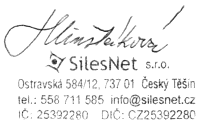

Smlouva č.o zajištění trvalého přístupu do sítě Internet |
| 1. | Poskytovatel: | SilesNet s.r.o. |
|---|---|---|
| sídlo: | Český Těšín, Ostravská 584/12, PSČ 737 01 | |
| jednající prostřednictvím: | Ing. Gražyny Hlinšťákové, jednatelky společnosti | |
| IČ: | 25392280 | |
| DIČ: | CZ25392280 | |
| bankovní spojení: | Raiffeisenbank, a.s., číslo účtu: 75583001/5500 | |
| registrace v obchod. rejstříku vedeném Krajským soudem v Ostravě v oddíle C, vložka 17812 | ||
| technická podpora: | telefon: 558 711 585, gsm: 777 27 28 28, e-mail: podpora@silesnet.cz | |
| 2. | Uživatel: |
| ||
|---|---|---|---|---|
| sídlo / místo podnikání / bytem: |
,
,
| |||
| zastoupen: |
| kontaktní osoba: |
| |
| IČ / RČ / datum narození: |
| DIČ: |
| |
| telefon: |
| e-mail: |
| |
| 1. | Poskytovatel se touto smlouvou zavazuje zajistit uživateli trvalé připojení do sítě Internet pomocí rádiových vln nebo datového kabelu (dále jen „služba“). Služba zahrnuje přenos protokolu TCP/IP není-li dále uvedeno jinak. |
|---|---|
| 2. | Smluvní strany se dohodly, že služba bude uživateli zpřístupněna prostřednictvím zařízení umožňujícího přenos dat mezi přípojným místem uživatele a distribučním bodem poskytovatele specifikovaném v protokolu o předání služby, který je součástí této smlouvy. Pokud zařízení je majetkem poskytovatele bude přenecháno do užívání uživatele a bude sloužit výhradně uživateli po dobu poskytování služby. Uživatel není oprávněn bez souhlasu poskytovatele zařízení přenechat či jinak zpřístupnit třetí osobě. V případě ukončení této smlouvy je uživatel povinen zařízení poskytovateli vrátit ve stavu odpovídajícím jeho běžnému opotřebení, a to nejpozději do 3 dnů od ukončení této smlouvy. O předání a převzetí zařízení bude mezi smluvními stranami sepsán protokol. V případě prodlení s vrácením zařízení uživatel je povinen uhradit poskytovateli smluvní pokutu ve výši 500,- Kč za každý započatý den prodlení. |
| 1. | Aktivace služby: |
Kč bez DPH jednorázově | Služba: |
|
|---|---|---|---|---|
| 2. | Rychlost: |
/
Mb/s | Měsíční paušál: |
Kč / měsíc |
| K cenám bude připočtena DPH v zákonné výši. | ||||
| 1. | Poskytovatel se zavazuje zpřístupnit (aktivovat) uživateli službu nejpozději do 14 dnů od uzavření této smlouvy. |
|---|---|
| 2. | Služba bude poskytována nepřetržitě 24 hodin denně s tím, že poskytovatel si vyhrazuje právo omezit částečně nebo i zcela poskytování služeb z důvodu plánované údržby sítě. Plánována údržba sítě SilesNet bude vždy oznámena předem. |
| 3. | Pro zajištění řádné funkce datového spoje se smluvní strany dohodnou na mimořádných krátkých servisních výlukách. |
| 1. | Uživatel se zavazuje hradit službu poskytovateli měsíčně platebním příkazem ve prospěch účtu poskytovatele: 75583001/5500, na základě faktury vystavené vždy na začátku fakturovaného měsíce, splatné do 14 dnů od vystavení faktury. Závazek uživatele se považuje za řádně splněný dnem připsání dlužné částky na bankovní účet poskytovatele. Faktury budou zasílány uživateli pouze elektronickou poštou na kontaktní e-mail uživatele uvedený v záhlaví této smlouvy.Uživatel je povinen změnu svého e-mailu a telefonního čísla nahlásit poskytovateli e-mailem v termínu nejpozději do 7 dnů od provedené změny. |
|---|---|
| 2. | V případě prodlení s úhradou jakékoliv platby dle této smlouvy je uživatel povinen uhradit poskytovateli smluvní pokutu ve výši 0,5 % z dlužné částky za každý den prodlení. Poskytovatel je v případě prodlení uživatele s úhradou jakékoliv platby dle této smlouvy oprávněn pozastavit poskytování služby uživateli, a to do doby úplného zaplacení dlužné částky. |
| 3. | Obnovení služby po přerušení služby z důvodu nezaplacené faktury bude uživateli účtováno jednorázově ve výši 100,- Kč bez DPH. |
| 4. | Obnovení služby po jejím přerušení na žádost uživatele bude uživateli účtováno jednorázově ve výši 300,- Kč bez DPH. |
| 5. | Přepis smlouvy na jiný subjekt bude uživateli účtován jednorázově ve výší 300,- Kč bez DPH. |
| 6. | Výše uvedené platební podmínky platí ode dne uzavření této smlouvy. Jakékoliv jejich změny budou zveřejňovány na internetových stránkách poskytovatele a uživatel se zavazuje, že je bude dodržovat. |
| 1. | Poskytovatel je povinen: a) poskytovat službu v souladu s článkem I. této smlouvy. b) zajistit plnou funkčnost zařízení a provoz datového spoje na vlastní náklady |
|---|---|
| 2. | Uživateli je pro řešení provozních situací a hlášení poruch na datovém spoji k dispozici služba na následujících telefonních číslech: 558 711 585, 777 27 28 28 nebo e-mailu: podpora@silesnet.cz. Servisní zásah nahlášené poruchy bude proveden u služby INTERNETdedicated nejpozději do 1 dne, u ostatních služeb bude proveden do 2 pracovních dnů. |
| 1. | Uživatel se zavazuje, že nebude měnit svou IP adresu (y), kterou mu přidělil poskytovatel. V opačném případě má poskytovatel nárok na uplatnění pokuty ve výši až 10 000 Kč. |
|---|---|
| 2. | Uživatel se zavazuje, že nebude zanášet počítačové viry a podobné algoritmy do sítě Internet. |
| 3. | Uživatel se zavazuje, že nebude pomocí služby přenášet privátní data spojené s protokolem netbios (sdílení souborů a tiskáren sítě Microsoft a podobně). |
| 4. | V naléhavém případě uživatel bez zbytečného odkladu zpřístupní koncový bod poskytovateli za účelem provedení nezbytného zásahu. |
| 5. | Poruchy, které budou uživatelem lokalizovány na přenechaném spoji, budou neprodleně hlášeny telefonicky na telefonní čísla uvedená v čl. V. této smlouvy. |
| 1. | Poskytovatel nenese odpovědnost za: - poruchu předmětného spoje způsobenou neoprávněným nebo neodborným zásahem do datové přípojky uživatelem nebo třetí osobou, funkčnost částí sítě Internet jiných provozovatelů, obsah informací zveřejňovaných prostřednictvím Internetu jinými subjekty. |
|---|---|
| 2. | Jestliže vyšší moc omezí trvání nebo rozsah poskytované služby podle článku I. této smlouvy, jsou obě smluvní strany zproštěny svých závazků po dobu trvání tohoto zásahu vyšší moci. Vyšší mocí se pro účely této smlouvy rozumí mimořádná objektivně neodvratitelná okolnost např.: dlouhodobý výpadek elektrické energie na straně technického zařízení poskytovatele nebo uživatele; událost živelného charakteru, které nemůže být zabráněno ani při vynaložení veškerého úsilí, které lze rozumně požadovat za daných podmínek konkrétního případu. V případě poruchy na datovém spoji zahájí poskytovatel neodkladně veškeré kroky k jejímu odstranění v době co možná nejkratší od okamžiku nahlášení poruchy uživatelem. |
| 3. | Za dobu, po kterou nelze využívat připojení k Internetu pro poruchový stav spoje, za který odpovídá poskytovatel, a který byl uživatelem řádně nahlášen v souladu s čl. VI této smlouvy, má uživatel právo na vrácení poměrné částky z ceny za službu, případně bude situace řešena dohodou. |
| 4. | Tato smlouva je pro smluvní strany závazná a účinná od níže uvedeného dne jejího podpisu. |
| 5. | Smlouva se uzavírá na dobu neurčitou s 3 – měsíční výpovědní lhůtou. Výpověď smlouvy musí účastníci provést písemně doporučeným dopisem. Výpovědní lhůta začíná běžet od 1. dne měsíce následujícího po doručení výpovědi druhé smluvní straně. |
| 6. | Poskytovatel je oprávněn od této smlouvy odstoupit v případě prodlení uživatele s úhradou jakékoliv platby dle této smlouvy, či porušení jiné povinnosti vyplývající z této smlouvy. |
| 7. | Smluvní strany se dohodly, že veškeré závazkové právní vztahy související s touto smlouvou se řídí platným českým právním řádem. Změny a doplnění této smlouvy lze učinit pouze formou písemných dodatků k této smlouvě. |
| 8. | Smluvní strany prohlašují, že jsou plně způsobilé k právním úkonům a k uzavření této smlouvy. Zároveň smluvní strany prohlašují, že si tuto smlouvu přečetly a s jejím obsahem souhlasí, a že byla sepsána podle jejich pravé, vážné a svobodné vůle, za nijak nevýhodných podmínek, což stvrzují níže připojenými vlastnoručními podpisy. |
| V dne
|
Uživatel:
|
Poskytovatel: |